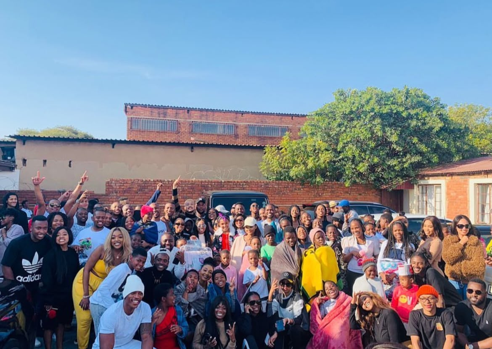

MotorSundayGroup started the Winter Blanket Drive to give back to the communities.For the past few years car entusiasts have come together at our Sunday meets to collect donations
Mission and vision: To help shelters,families and children across Gauteng stay warm during winter.MSG focuses on car , communities and care

Winter in South Africa can be tough especially for those without warm clothes.As a car group we spend our sundays together.We decided to use that time to also look out for others.Every blanket donated means one more person who will sleep warm at night
This drive is run by the communities ,for the communities.You do not need to own a fancy car or even have a car in general to help.If you have a heart to give you are part of MSG
MSG drives have been happening for several years .It has been operating on social media mostly Instagram and that's where their information is .This organization is sponsored by businesses and the businesses donate blankets through MSG .MSG combines the car culture with giving back to the communities around Gauteng .The mission and vision of the MSG Blanket Drive is to give back to the communities that are disadvantaged and also to inspire the kids in those communities that it can also be the one own those types of cars